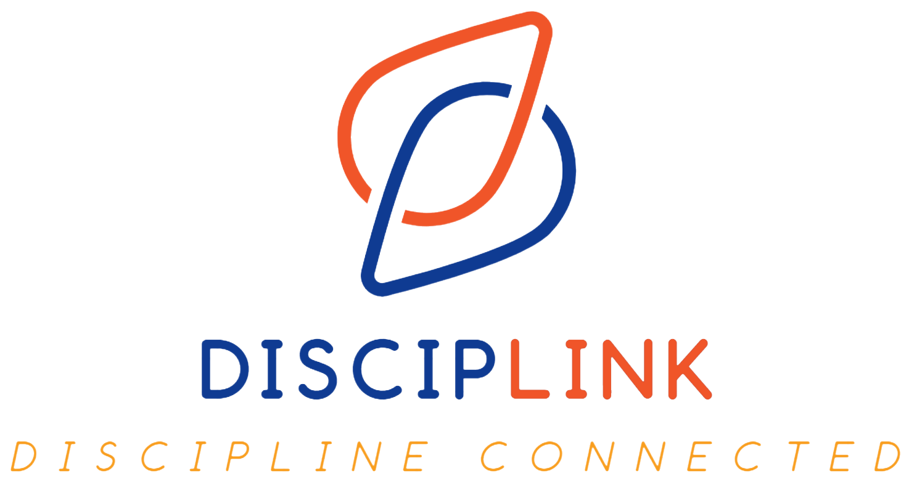

Home
TATA TERTIB
MAHASISWA
Sebuah sistem yang dirancang untuk mengelola aturan,
pelanggaran, dan sanksi di Universitas

Disciplink adalah platform digital inovatif yang dirancang untuk menghubungkan mahasiswa dengan sistem kedisiplinan kampus. Sebagai gabungan dari kata "Discipline" dan "Link", Disciplink berfokus pada penyederhanaan proses pengelolaan tata tertib di lingkungan akademik, memudahkan mahasiswa dan pihak kampus untuk memahami, memantau, dan menegakkan aturan secara efisien.